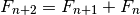
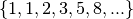

fibon – Fibonacci Series¶
Analysis¶
The Fibonacci Series,  , is defined by a simple recurrence rule.
, is defined by a simple recurrence rule.

Typically,  and
and  .
.
This leads to the sequence

There are number of interesting properties for the values in this series.
Most notable, the Golden Ratio,  , is related to this sequence.
, is related to this sequence.

Note that has this property:

Implementations¶
The essential module has this API.
hamcalc.math.fibon – Fibonacci Numbers
Here are some test cases.
>>> import hamcalc.math.fibon as fibon
>>> list( fibon.fibon_last_iter( last=100 ) )
[1, 1, 2, 3, 5, 8, 13, 21, 34, 55, 89]
>>> list( fibon.fibon_count_iter( count=5 ) )
[1, 1, 2, 3, 5]
There are two implementations.
- Functional. This uses a generator function.
- Object-Oriented. This uses recursive method and memoization.
There are two implementations: object-oriented and functional.
Object-Oriented Fibonacci Series
hamcalc.math.fibon.obj – Fibonacci Numbers, object-oriented implementation.
This module defines a callable class which can efficiently generate Fibonacci numbers.
It also defines two useful generator functions to provide sequences of Fibonacci numbers.
Test Cases
>>> import hamcalc.math.fibon.obj as fibon
>>> fibon_func= fibon.Fibonacci()
>>> a, b = fibon_func(11), fibon_func(12)
>>> a
144
>>> b
233
>>> b/a
1.6180555555555556
>>> list( fibon.fibon_count_iter( count=5 ) )
[1, 1, 2, 3, 5]
>>> list( fibon.fibon_last_iter( last=100 ) )
[1, 1, 2, 3, 5, 8, 13, 21, 34, 55, 89]
For HamCalc compatibility, use f_0=0 in the constructor. This will yield a Fibonacci Series that starts with zero.
- hamcalc.math.fibon.obj.fibon_count_iter(f_0=1, f_1=1, count=22)[source]¶
Yields a sequence of Fibonacci numbers bounded by count.
Parameters: - f_0 – The first number, default is 1.
- f_1 – The second number, default is 1.
- count – The number of numbers to return.
- hamcalc.math.fibon.obj.fibon_last_iter(f_0=1, f_1=1, last=10000000)[source]¶
Yields a sequence of Fibonacci numbers bounded by the last value.
Parameters: - f_0 – The first number, default is 1.
- f_1 – The second number, default is 1.
- last – Upper limit; this number is greater than all numbers returned.
Functional Fibonacci Series
hamcalc.math.fibon.func – Fibonacci Numbers, functional implementation.
This module defines a generator function which can efficiently generate Fibonacci numbers.
It also defines two useful iterator tools functions to provide finite sequences of Fibonacci numbers.
Test Cases
>>> import hamcalc.math.fibon.func as fibon
>>> list( fibon.fibon_count_iter( count=13 ) )
[1, 1, 2, 3, 5, 8, 13, 21, 34, 55, 89, 144, 233]
>>> f= list( fibon.fibon_count_iter( count=13 ) )
>>> a, b = f[11], f[12]
>>> a
144
>>> b
233
>>> b/a
1.6180555555555556
>>> list( fibon.fibon_last_iter( last=100 ) )
[1, 1, 2, 3, 5, 8, 13, 21, 34, 55, 89]
For HamCalc compatibility, use f_0=0 in the various generator functions. This will yield a Fibonacci Series that starts with zero.
- hamcalc.math.fibon.func.fibon_count_iter(f_0=1, f_1=1, count=22)[source]¶
Yields a sequence of Fibonacci numbers bounded by count.
Parameters: - f_0 – The first number, default is 1.
- f_1 – The second number, default is 1.
- count – The number of numbers to return.
- hamcalc.math.fibon.func.fibon_last_iter(f_0=1, f_1=1, last=10000000)[source]¶
Yields a sequence of Fibonacci numbers bounded by the last value.
Parameters: - f_0 – The first number, default is 1.
- f_1 – The second number, default is 1.
- last – Upper limit; this number is greater than all numbers returned.
Legacy Introduction¶
FIBONACCI SERIES of Numbers by George Murphy VE3ERP
A Fibonacci series is a series of numbers, positive or negative, integer or
decimal, where each number is the sum of the two preceding numbers.
The Fibonacci Ratio R is the value of any number in the series divided by the
previous number. R approaches, but can never reach the Golden Ratio Phi.
In cryptograhy (e.g., the DaVinci Code) the Golden Ratio Phi is, like the value
of Pi, an irrational number.
EQUATIONS:
Pi= 4 x arctangent of 1 radian.
Phi= (1/r+1), where r is the Fibonacci Ratio.
n = nr² + nr where n is a Finonacci number.
Commonly accepted practical values are:
Pi= 3.141593 (approx.)
Phi=1.618033989 (approx.)
Legacy Output¶
N (number) R (ratio N/previous N) P (ratio 1/R+1) Diff. (P-Phi)
0 0 0 0.000000
1 1 2 0.381967
2 2 1.5 -0.118033
3 1.5 1.666667 0.048634
5 1.666667 1.6 -0.018033
8 1.6 1.625 0.006967
13 1.625 1.615385 -0.002648
21 1.615385 1.619048 0.001015
34 1.619048 1.617647 -0.000386
55 1.617647 1.618182 0.000149
89 1.618182 1.617978 -0.000055
144 1.617978 1.618056 0.000023
233 1.618056 1.618026 -0.000007
377 1.618026 1.618037 0.000004
610 1.618037 1.618033 -0.000000
987 1.618033 1.618034 0.000001
1597 1.618034 1.618034 0.000001
2584 1.618034 1.618034 0.000001
4181 1.618034 1.618034 0.000001
6765 1.618034 1.618034 0.000001
10946 1.618034 1.618034 0.000001
17711 1.618034 1.618034 0.000001
Legacy Quirks¶
The Legacy did several division-by-zero operations, which were masked by adjusting the output.
The Legacy did a “regressive” series, also.